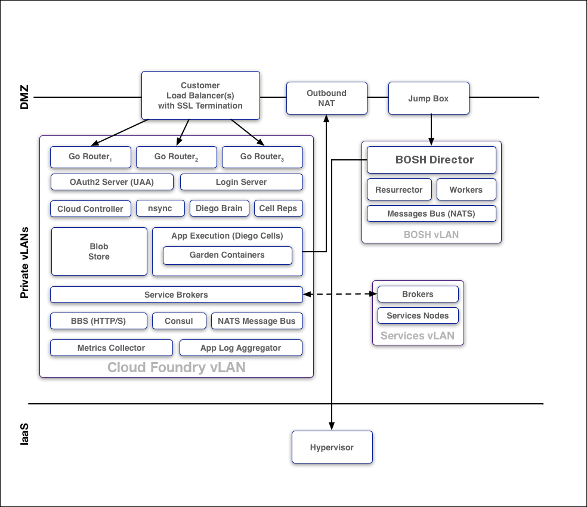
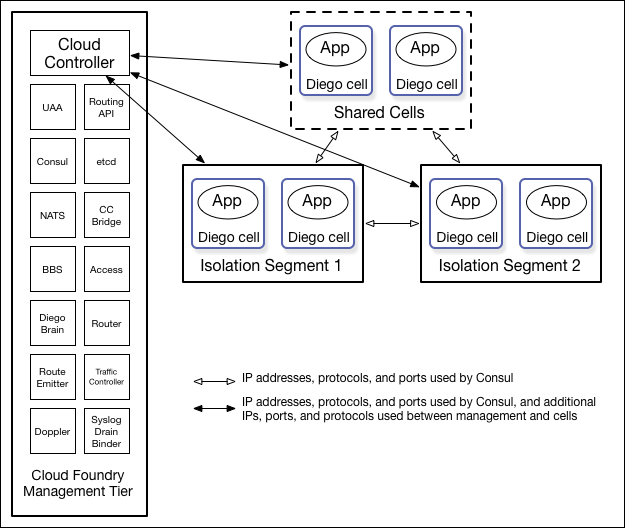

Understanding Cloud Foundry Security
Page last updated: April 25, 2017
This topic provides an overview of Cloud Foundry (CF) security. For an overview of container security, see the Understanding Container Security topic.
Cloud Foundry implements the following measures to mitigate against security threats:
- Minimizes network surface area
- Isolates customer applications and data in containers
- Encrypts connections
- Uses role-based access controls, applying and enforcing roles and permissions to ensure that users can only view and affect the spaces for which they have been granted access
- Ensures security of application bits in a multi-tenant environment
- Prevents possible denial of service attacks through resource starvation
System Boundaries and Access
As the image below shows, in a typical deployment of Cloud Foundry, the components run on virtual machines (VMs) that exist within a VLAN. In this configuration, the only access points visible on a public network are a load balancer that maps to one or more Cloud Foundry routers and, optionally, a NAT VM and a jumpbox. Because of the limited number of contact points with the public internet, the surface area for possible security vulnerabilities is minimized.
Note: Pivotal recommends that you also install a NAT VM for outbound requests and a Jumpbox to access the BOSH Director, though these access points are optional depending on your network configuration.

Protocols
All traffic from the public internet to the Cloud Controller and UAA happens over HTTPS. Inside the boundary of the system, components communicate over a publish-subscribe (pub-sub) message bus NATS, HTTP, and SSL/TLS.
BOSH
Operators deploy Cloud Foundry with BOSH. The BOSH Director is the core orchestrating component in BOSH: it controls VM creation and deployment, as well as other software and service lifecycle events. You use HTTPS to ensure secure communication to the BOSH Director.
Note: Pivotal recommends that you deploy the BOSH Director on a subnet that is not publicly accessible, and access the BOSH Director from a Jumpbox on the subnet or through VPN.
BOSH includes the following functionality for security:
Communicates with the VMs it launches over NATS. Because NATS cannot be accessed from outside Cloud Foundry, this ensures that published messages can only originate from a component within your deployment.
Provides an audit trail through the
bosh taskscommand. This command shows all actions that an operator has taken with BOSH.Allows you to set up individual login accounts for each operator. BOSH operators have root access.
Note: BOSH does not encrypt data stored on BOSH VMs. Your IaaS might encrypt this data.
Isolation Segments
Isolation segments provide dedicated pools of resources to which apps can be deployed to isolate workloads. Using isolation segments separates app resources as completely as if they were in different CF deployments but avoids redundant management components and unneeded network complexity.
You can designate isolation segments for exclusive use by orgs and spaces within CF. This guarantees that apps within the org or space use resources that are not also used by other orgs or spaces.
Customers can use isolation segments for different reasons, including the following:
- To follow regulatory restrictions that require separation between different types of applications. For example, a health care company may not be able to host medical records and billing systems on the same machines.
- To dedicate specific hardware to different isolation segments. For example, to guarantee that high-priority apps run on a cluster of high-performance hosts.
- To separate data on multiple clients, to strengthen a security story, or offer different hosting tiers.
In CF, the Cloud Controller Database (CCDB) identifies isolation segments by name and GUID, for example 30dd879c-ee2f-11db-8314-0800200c9a66. The isolation segment object has no internal structure beyond these two properties at the Cloud Foundry level, but BOSH associates the name of the isolation segment with Diego cells, through their placement_tag property.
This diagram shows how isolation segments keep apps running on different pools of cells, and how the cells communicate with each other and with the management components:

See the Installing PCF Isolation Segment and Managing Isolation Segments topics for more information about how to create and manage isolation segments in a PCF deployment.
See the Isolation Segments section of the Cloud Controller API (CAPI) Reference for API commands related to isolation segments.
Authentication and Authorization
User Account and Authentication (UAA) is the central identity management service for Cloud Foundry and its various components.
UAA acts as an OAuth2 Authorization Server and issues access tokens for applications that request platform resources. The tokens are based on the JSON Web Token and are digitally signed by UAA.
Operators can configure the identity store in UAA. If users register an account with the Cloud Foundry platform, UAA acts as the user store and stores user passwords in the UAA database using bcrypt. UAA also supports connecting to external user stores through LDAP and SAML. Once an operator has configured the external user store, such as a corporate Microsoft Active Directory, users can use their LDAP credentials to gain access to the Cloud Foundry platform instead of registering a separate account. Alternatively, operators can use SAML to connect to an external user store and enable single sign-on for users into the Cloud Foundry platform.
Managing User Access with Role-Based Access Control
Applications that users deploy to Cloud Foundry exist within a space. Spaces exist within orgs. To view and access an org or a space, a user must be a member of it. Cloud Foundry uses role-based access control (RBAC), with each role granted permissions to either an org or a specified space. For more information about roles and permissions, refer to the Orgs, Spaces, Roles, and Permissions topic.
For more information, see Getting Started with the Apps Manager and Managing User Accounts and Permissions Using the Apps Manager.
Security for Service Broker Integration
The Cloud Controller authenticates every request with the Service Broker API using HTTP or HTTPS, depending on which protocol that you specify during broker registration. The Cloud Controller rejects any broker registration that does not contain a username and password.
Service instances bound to an app contain credential data. Users specify the binding credentials for user-provided service instances, while third-party brokers specify the binding credentials for managed service instances. The VCAP_SERVICES environment variable contains credential information for any service bound to an app. Cloud Foundry constructs this value from encrypted data that it stores in the Cloud Controller Database (CCDB).
Note: The selected third-party broker controls how securely to communicate managed service credentials.
A third-party broker might offer a dashboard client in its catalog. Dashboard clients require a text string defined as a client_secret. Cloud Foundry does not store this secret in the CCDB. Instead, Cloud Foundry passes the secret to the UAA component for verification using HTTP or HTTPS.
Software Vulnerability Management
Cloud Foundry manages software vulnerability using releases and BOSH stemcells. New Cloud Foundry releases are created with updates to address code issues, while new stemcells are created with patches for the latest security fixes to address any underlying operating system issues.
Ensuring Security for Application Artifacts
Cloud Foundry secures both the code and the configuration of an application using the following functionality:
Application developers push their code using the Cloud Foundry API. Cloud Foundry secures each call to the CF API using the UAA and SSL.
The Cloud Controller uses RBAC to ensure that only authorized users can access a particular application.
The Cloud Controller stores the configuration for an application in an encrypted database table. This configuration data includes user-specified environment variables and service credentials for any services bound to the app.
Cloud Foundry runs the app inside a secure container. For more information, see the Understanding Container Security topic.
Cloud Foundry operators can configure network traffic rules to control inbound communication to and outbound communication from an app. For more information, see the Network Traffic Rules section of the Understanding Container Security topic.
Security Event Logging and Auditing
For operators, Cloud Foundry provides an audit trail through the bosh tasks command. This command shows all actions that an operator has taken with the platform.
Additionally, operators can redirect Cloud Foundry component logs to a standard syslog server using the syslog_daemon_config property in the metron_agent job of cf-release.
For users, Cloud Foundry records an audit trail of all relevant API invocations of an app. The Cloud Foundry Command Line Interface (cf CLI) command cf events returns this information.
Recommendations for Running a Secure Deployment
To help run a secure deployment, Pivotal recommends the following:
- Configure UAA clients and users using a BOSH manifest. Limit and manage these clients and users as you would any other kind of privileged account.
- Deploy within a VLAN that limits network traffic to individual VMs. This reduce the possibility of unauthorized access to the VMs within your BOSH-managed cloud.
- Enable HTTPS for applications and SSL database connections to protect sensitive data transmitted to and from applications.
- Ensure that the Jumpbox is secure, along with the load balancer and NAT VM.
- Encrypt stored files and data within databases to meet your data security requirements. Deploy using industry standard encryption and the best practices for your language or framework.
- Prohibit promiscuous network interfaces on the trusted network.
- Review and monitor data sharing and security practices with third-party services that you use to provide additional functionality to your application.
- Store SSH keys securely to prevent disclosure, and promptly replace lost or compromised keys.
- Use Cloud Foundrys RBAC model to restrict your users access to only what is necessary to complete their tasks.
- Use a strong passphrase for both your Cloud Foundry user account and SSH keys.
- Use the IPsec add-on to encrypt IP data traffic within your deployment.